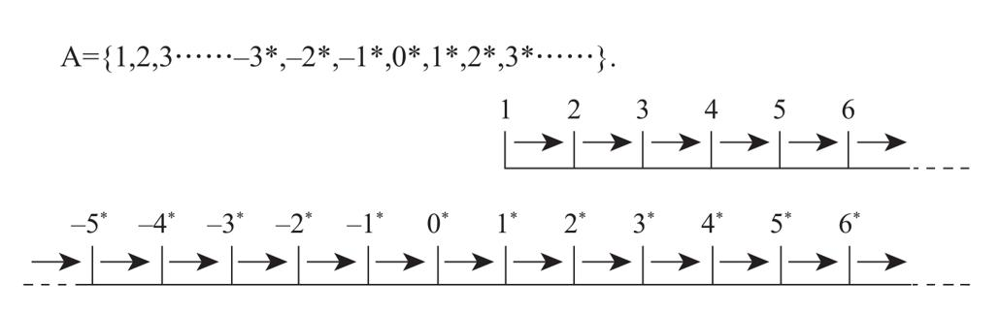

来自另一个方面的研究也同样不支持人脑以“逻辑机”的方式处理数学问题这个假设。从19世纪末开始，一些数学家和逻辑学家，如戴德金、皮亚诺、弗雷格（Frege）、罗素和怀特海等，就试图把算术建立在纯粹的形式基础上8。他们设计了非常精密的逻辑系统，试图通过使用定理和句法规则模仿人类的数字直觉。这种形式主义的取向最终面临一系列问题，进一步揭示了把人脑功能归纳入一个形式系统是多么艰难。
皮亚诺公理（Peano’s axioms）是其中最简单的。抛开数学术语，这些公理本质上可以被简单描述如下：
· 1是一个数字。
· 每一个数字都有一个后继数，可以被记作Sn或者简单的n+1。
· 除1以外的所有数字前面都有一个数字（假设我们只考虑正整数）。
· 两个不同的数字不能有相同的后继数。
· 归纳公理（Axiom of recurrence）：如果数字1符合一个性质，并且n和n+1都符合这个性质，那么所有的数字均符合这个性质。
这些公理看起来似乎很复杂并且毫无道理。它们所做的只是把整数链（像1、2、3、4等）这个具体概念形式化。这些公理反映了我们认为这个链没有终点的直觉：每一个数字之后都会跟着另一个与之前所有数字都不一样的数字。最后，它也包含了非常简单的加法和乘法的定义：加一个数字n是指重复后继操作n遍，与n相乘表示重复加法操作n次。
但是，这种形式存在一个重大问题。皮亚诺公理很好地描述了整数的直观属性，也同样适用于其他一些我们不愿称其为“数字”的客体，这些客体能够满足皮亚诺公理的各个方面。它们被称为“算术的非标准模型”，给形式主义的研究取向带来了相当大的困难。
想要用简单的几句话来讲清楚什么是非标准模型非常困难，但是一个经过简化的比喻应该可以让读者对这个概念产生足够的认识。在常见的整数集“1、2、3……”的正中间加入一些新的元素，如一个向两端无限延伸的新的数轴。
为了避免迷惑，我们把新数轴上的数字标记上星号，像是-3*、-2*、-1*、0*、1*、2*、3*,等等，用来代表第二个集合中所有的数字。标准整数与现在的新元素重新组合之后得到的这个集合，我们称之为“人工整数”：

A集合非常符合“人工”这个名称。这是一个不符合任何直觉的妄想物。我们肯定不会把这些元素称为“数字”。然而除了归纳公理（因为现在这个例子太过简化了），它们符合其他所有皮亚诺公理：人工数字1不是任何一个其他人工数字的后继数，除此以外的其他人工数字在集合A中均有且仅有一个相互之间不同的后继数。1的后继数是2，2的后继数是3等；与此类似，-2*的后继数是-1*，0*的后继数是1*，等等。从纯粹的形式主义的观点出发，集合A完全合格地表征了皮亚诺公理对整数的定义，因此它是一个“算术的非标准模型”。事实上，除集合A之外还有更多更奇怪的非标准模型。
非标准模型太过荒诞，为了能够使读者更加直观地了解学术界对非标准模型的评价，我需要使用一个有些牵强的比喻。在鸭嘴兽被发现之前，人类对动物物种的分类标准似乎已经非常完善，当这种“怪物”在澳大利亚被发现时，动物学家们没有料到，他们用于确定鸟类的许多标准，如有喙、生蛋，竟然也适用于这种与鸟类相去甚远的哺乳动物。同样，皮亚诺也没有料到，他对于整数的定义竟也适用于与普通数字相差甚远的“数学怪物”。
鸭嘴兽的发现使动物学家们对物种分类的标准进行了修改。为什么数学家不能像动物学家一样呢？难道他们不能把更多的公理加入皮亚诺公理，以使其适用且仅适用于“真实”的整数吗？我们现在正触及悖论的核心。有关数字逻辑，有一个由斯科林（Skolem）首先证明，与著名的哥德尔定理密切相关的强大的定理：增加新的公理永远也无法彻底消除非标准模型。不管如何努力去改变公理的形式，数学家总是会遇到新的“鸭嘴兽们”。这些“怪物”符合所有想象得到的有关整数的形式定义，却又全然不是整数。
事实上实际情况更加复杂，虽然只有被称为“第一皮亚诺公理”的这一部分遭遇到这种非标准模型的无限扩展，但是这一部分被公认为现有的数字理论中公理化程度最好的。可见，人类所拥有的最好的公理系统都无法成功诠释我们的数字直觉。“自然整数”确实符合这些公理的规则，然而“人工整数”也同样符合。因此，人类的“数感”不能被归纳为该公理中的形式化定义。正如胡塞尔（Husserl）在他的《算术哲学》（Philosophy of Arithmetic）9一书中所说：为我们所理解的数字找到一个意义明确的形式定义，从根本上来讲是不可能的，数字的概念非常原始，是无法被定义的。
这个结论让人难以相信。我们都非常清楚整数是什么，但是为什么很难对它们进行形式化呢？鉴于所有现有形式定义均不符合要求，有些人可能会认为数数可以用来表达整数的概念：从1开始，重复皮亚诺的“后继数”操作，需要多少次就进行多少次。当然，不能超过一定的限度，否则又会再次陷入人工整数的困境。这里可以很明显地看出定义的循环：当重复后继数操作一定“次数”时会获得一个“数字”。
在《科学与方法》（Science and Method）一书中，庞加莱批评了他的同辈们试图使用集合理论来定义整数的荒谬做法10。数学家路易·库蒂拉（Louis Couturat）曾提出：“零是空类中元素的个数。”庞加莱对此回应道：“那么什么是空类？就是那个包含零个元素的类。”庞加莱接着指责说：“零是能够满足一个永远不能被满足的条件的物品的个数，由于‘永远不能’表示‘任何情况下都不可能’，这种定义没有任何进步意义。”对于库蒂拉所定义的“1是其中任何两个元素都完全相同的集合中元素的个数”，庞加莱尖锐地回应道：“恐怕在问库蒂拉什么是2的时候，他就被迫需要用上数字1了。”
具有讽刺意味的是，任何一个5岁的儿童都懂的数字，聪明的逻辑学家们却要绞尽脑汁地试图定义它们。实际上形式化的定义完全没有必要，我们本能地知道整数是什么。通过那些能够满足皮亚诺公理的模型，我们可以迅速地区分出真正的整数和其他没有意义的人工想象物。因此我们的大脑并不依赖公理。
我在这一点上反复进行强调，是因为它对于数学教育具有重要的启示作用。如果教育心理学家能够更多地关注人类心理中“直觉高于形式公理”这一重要的事实，也许就有可能避免数学史上一次史无前例的事故：声名狼藉的“现代数学”，它在法国及许多其他国家小学生的心中留下了创伤。在20世纪70年代，以更严格地教育学生（一个无可否认的重要目标！）为借口，新的数学课程被设计出来了，它由荒谬的公理和形式体系组成，给小学生增加了繁重的负担。这次教育改革的依据是基于“脑-机隐喻”的知识获取理论，该理论把儿童看作完全没有个人想法、能够接受任何公理系统的小型信息加工装置。一群被称为“布尔巴基”的精英数学家提出，教师从一开始就应当向儿童讲授数学中最基础的基本形式体系。确实，如果一些抽象的理论能够以一种更加精确和严密的方式，把所有的数学知识都总结出来，为什么要让小学生们浪费宝贵的时间来解决简单的、具体的问题呢？
通过之前的章节，我们可以很容易看出这条推理线中存在的错误。儿童的大脑不是海绵，而是一个有结构的器官，只有当新知识能够与他们现有的知识融为一体时他们才能够掌握新知识。他们的大脑非常适合于表征连续的量，以及以模拟的形式进行心理操作，并没有演化出可以迅速地接受大量公理系统或是冗长的符号法则这样的能力。因此儿童的大脑对量的直觉优于逻辑公理。约翰·洛克（John Locke）早在1689年就敏锐地观察到，并在《论人类的认识》（An Essay Concerning Human Understanding）一书中提出：“许多人都知道1加2等于3，不会去思考能够得出这个结论的公理。”
因此，用抽象的公理对儿童的大脑进行狂轰滥炸很可能会徒劳无功。更加合理的数学教学策略应该以儿童对量化操作和数数的理解为基础，进一步丰富儿童的直觉。教师应该先用一些有娱乐性质的数字谜语或者问题来唤起他们的求知欲，然后循序渐进地把数学符号及其便利性引入教学。在这个阶段，教师尤其需要花费大量时间，以确保这些符号知识没有与儿童的数量直觉脱节。最终，形式公理系统的教学得以实现。任何情况下，都不应该将形式公理系统强加于儿童，而应该随时按照更加简洁和有效的要求来调整教学内容。理想情况下，每一个小学生都能够在心理上以一种压缩的形式追溯数学的发展史，感受到学习动机。